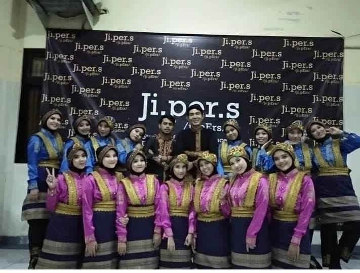
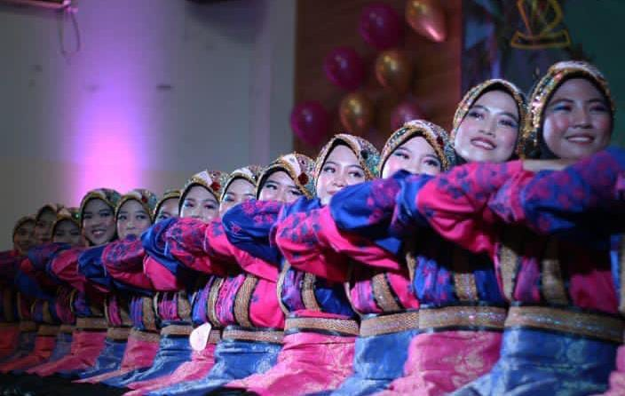
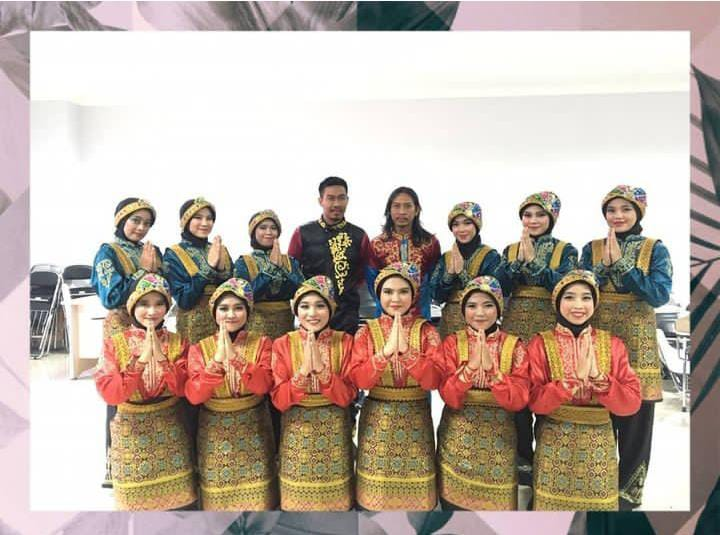

ABOUT
Libsance merupakan lembaga semi otonom dibawah jurusan Ilmu Perpustakaan Universitas Islam Negeri Syarif Hidayatullah Jakarta. Libsance merupakan singkatan dari Library Science Saman Dance. Libsance didirikan pada tanggal 26/03/2011. Saat ini libsance memiliki official media sosial yang di kelola oleh salah satu anggota dari libsance.Baca Selengkapnya
Libsance memiliki misi dan visi untuk mengharumkan nama jurusan ilmu perpustakaan melalui LSO tari Saman ini serta Mengembangkan dan melestarikan seni budaya tari tradisional Indonesia Mengikuti lomba-lomba agar dapat menjadi LSO yang membanggakan.Baca Selengkapnya


